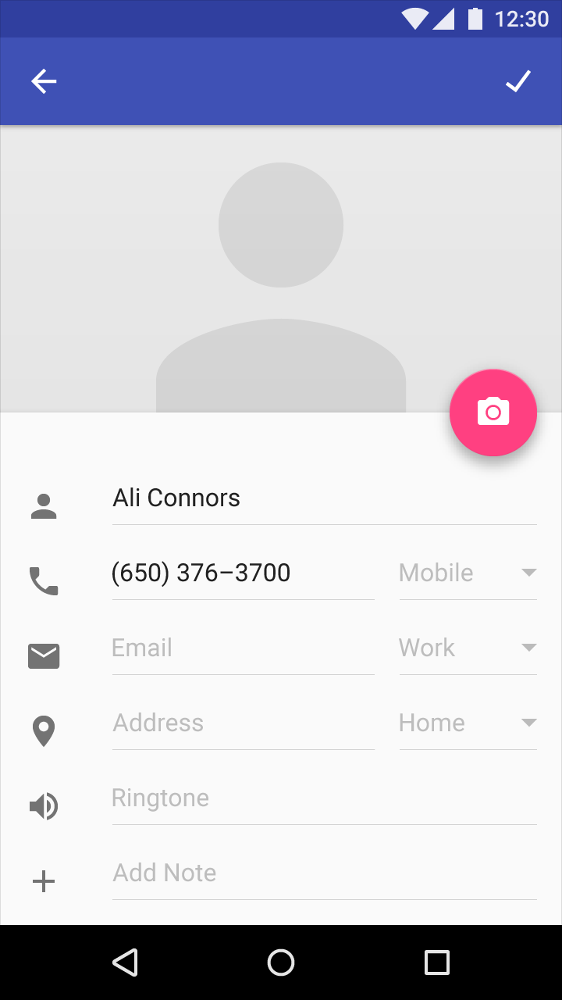

왼쪽에서 오른쪽으로(LTR)와 오른쪽에서 왼쪽으로(RTL)인 인터페이스 사이의 주된 차이는 시간의 흐름이 어떻게 연결되었는가 하는 것입니다. LTR 문자를 사용하는 언어는 시간이 왼쪽에서 오른쪽으로 흐르는 것으로 시간을 묘사하고, RTL 문자를 사용하는 언어는 시간이 오른쪽에서 왼쪽으로 흐르는 것으로 시간을 묘사합니다.
|
요소 |
LTR |
RTL |
|
이미지 |
왼쪽에서 오른쪽을 가리키는 화살표가 앞으로(Forward) 동작을 나타냅니다: → |
오른쪽에서 왼쪽을 가리키는 화살표가 앞으로(Forward) 동작을 나타냅니다: ← |
|
텍스트 |
문장은 왼쪽에서 오른쪽으로 읽힙니다. |
문장은 오른쪽에서 왼쪽으로 읽힙니다. |
|
타임라인 |
이벤트의 표현 순서는 왼쪽에서 오른쪽으로 진행합니다. |
이벤트의 표현 순서는 오른쪽에서 왼쪽으로 진행합니다. |
미러링(Mirroring)은 LTR에서 RTL로 또는 그 반대로 UI를 변경하는 것을 말하며, 앱의 레이아웃과 그래픽적 요소들 모두에 영향을 미칩니다. LTR 문자에서 텍스트 문자열의 내용, 숫자, 그리고 내장된 단어는 미러링되지 않는다는 것에 유의하십시오; 이것들은 LTR로 보여집니다. (텍스트 문자열의 내용은 결코 미러링되지 않습니다; 그것은 항상 그 언어를 위해 올바른 방향에 있습니다.)
RTL 레이아웃은 LTR 레이아웃의 좌우가 반전된 모습입니다.
필수적인 레이아웃 변경 사항:
- 아이콘은 텍스트 필드의 우측에 위치합니다.
- 네비게이션 버튼은 역순으로 위치합니다.
- 스피커 아이콘과 같이 방향을 전달하는 아이콘은 미러링됩니다.
- 카메라와 체크 표시와 같은 방향을 전달하지 않는 아이콘은 미러링되지 않고 유지합니다.
- 텍스트는 미러링되지만, 시계와 전화번호는 아닙니다. RTL 문자에서 숫자는 LTR로 표시됩니다.

LTR UI를 사용한 예제
히브리어에서 RTL UI를 사용한 예제. 숫자는 LTR로 보여집니다.